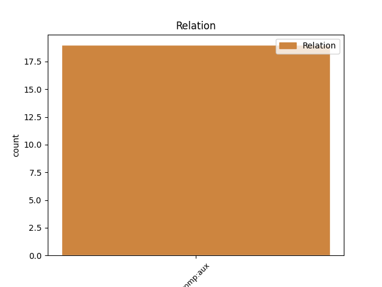
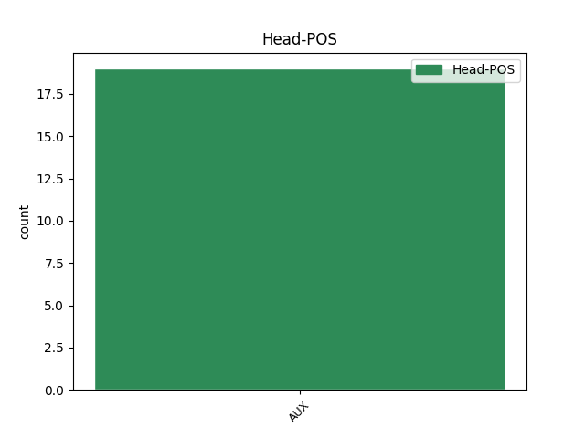
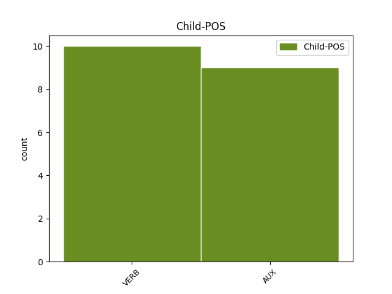

Distribution of features within this leaf



Agreement Rules sorted by frequency.
- When the dependent token is the complement for auxiliary(comp:aux) of the head token, and the dependent token is AUX.
1 سی_ڈی _ _ _ _ 0 _ _ _
2 کے _ _ _ _ 0 _ _ _
3 حقیقی _ _ _ _ 0 _ _ _
4 ہونے _ _ _ _ 0 _ _ _
5 کا _ _ _ _ 0 _ _ _
6 بھی _ _ _ _ 0 _ _ _
7 ثبوت _ _ _ _ 0 _ _ _
8 پیش _ _ _ _ 0 _ _ _
9 کیا _ _ _ _ 0 _ _ _
10 جائے جا AUX VAUX Mood=Ind|Number=Sing|Person=3|Tense=Fut|VerbForm=Fin 11 comp:aux _ ChunkId=VGF|ChunkType=child|Tam=gA|Vib=گا
11 گا جا AUX VAUX Mood=Ind|Number=Sing|Person=3|Tense=Fut|VerbForm=Fin 0 _ _ _
12 ۔ _ _ _ _ 0 _ _ _
Disagree Examples:
1 والدین _ _ _ _ 0 _ _ _
2 سے _ _ _ _ 0 _ _ _
3 گذارش _ _ _ _ 0 _ _ _
4 کی _ _ _ _ 0 _ _ _
5 جاتی _ _ _ _ 0 _ _ _
6 ہے _ _ _ _ 0 _ _ _
7 کہ _ _ _ _ 0 _ _ _
8 اپنی _ _ _ _ 0 _ _ _
9 اپنی _ _ _ _ 0 _ _ _
10 لڑکیوں _ _ _ _ 0 _ _ _
11 پر _ _ _ _ 0 _ _ _
12 بھرپور _ _ _ _ 0 _ _ _
13 نظر _ _ _ _ 0 _ _ _
14 رکھیں _ _ _ _ 0 _ _ _
15 ورنہ _ _ _ _ 0 _ _ _
16 اس _ _ _ _ 0 _ _ _
17 کے _ _ _ _ 0 _ _ _
18 شرمناک _ _ _ _ 0 _ _ _
19 نتائج _ _ _ _ 0 _ _ _
20 ہو _ _ _ _ 0 _ _ _
21 سکتے _ _ _ _ 0 _ _ _
22 ہےں _ _ _ _ 0 _ _ _
23 , _ _ _ _ 0 _ _ _
24 جس _ _ _ _ 0 _ _ _
25 کے _ _ _ _ 0 _ _ _
26 ذمہ_دار _ _ _ _ 0 _ _ _
27 والدین _ _ _ _ 0 _ _ _
28 ہوں ہے AUX VM Mood=Ind|Number=Plur|Person=3|Tense=Pres|VerbForm=Fin|Voice=Act 29 comp:aux _ AltTag=AUX-VERB|ChunkId=VGF4|ChunkType=head|Stype=declarative|Tam=hE|Vib=ہے
29 گے گا AUX VAUX Gender=Masc|Mood=Ind|Tense=Fut|VerbForm=Fin 0 _ _ _
30 ۔ _ _ _ _ 0 _ _ _
1 انہوں _ _ _ _ 0 _ _ _
2 نے _ _ _ _ 0 _ _ _
3 کہا _ _ _ _ 0 _ _ _
4 کہ _ _ _ _ 0 _ _ _
5 حکومت _ _ _ _ 0 _ _ _
6 ایک _ _ _ _ 0 _ _ _
7 جامع _ _ _ _ 0 _ _ _
8 منصوبے _ _ _ _ 0 _ _ _
9 کے _ _ _ _ 0 _ _ _
10 تحت _ _ _ _ 0 _ _ _
11 اس _ _ _ _ 0 _ _ _
12 علاقہ _ _ _ _ 0 _ _ _
13 کی _ _ _ _ 0 _ _ _
14 ترقی _ _ _ _ 0 _ _ _
15 کا _ _ _ _ 0 _ _ _
16 ارادہ _ _ _ _ 0 _ _ _
17 رکھتی رکھ VERB VM Gender=Fem|Mood=Ind|Number=Sing|Tense=Past|VerbForm=Fin|Voice=Act 18 comp:aux _ ChunkId=VGF2|ChunkType=head|Stype=declarative|Tam=WA|Vib=تھا
18 ہے ہے AUX VAUX Mood=Ind|Number=Sing|Person=3|Tense=Pres|VerbForm=Fin 0 _ _ _
19 ۔ _ _ _ _ 0 _ _ _
1 نیوکلیئر _ _ _ _ 0 _ _ _
2 تجربہ _ _ _ _ 0 _ _ _
3 طویل_مدتی _ _ _ _ 0 _ _ _
4 ترک _ _ _ _ 0 _ _ _
5 اسلحہ _ _ _ _ 0 _ _ _
6 مذاکرات _ _ _ _ 0 _ _ _
7 کے _ _ _ _ 0 _ _ _
8 لیے _ _ _ _ 0 _ _ _
9 ایک _ _ _ _ 0 _ _ _
10 خطرہ _ _ _ _ 0 _ _ _
11 ہے _ _ _ _ 0 _ _ _
12 ۔ _ _ _ _ 0 _ _ _
13 جس _ _ _ _ 0 _ _ _
14 میں _ _ _ _ 0 _ _ _
15 چین _ _ _ _ 0 _ _ _
16 ، _ _ _ _ 0 _ _ _
17 جاپان _ _ _ _ 0 _ _ _
18 ، _ _ _ _ 0 _ _ _
19 روس _ _ _ _ 0 _ _ _
20 ، _ _ _ _ 0 _ _ _
21 جنوبی _ _ _ _ 0 _ _ _
22 کوریا _ _ _ _ 0 _ _ _
23 اور _ _ _ _ 0 _ _ _
24 امریکہ _ _ _ _ 0 _ _ _
25 شامل _ _ _ _ 0 _ _ _
26 ہیں _ _ _ _ 0 _ _ _
27 جو _ _ _ _ 0 _ _ _
28 چاہتے _ _ _ _ 0 _ _ _
29 ہیں _ _ _ _ 0 _ _ _
30 کہ _ _ _ _ 0 _ _ _
31 شمالی _ _ _ _ 0 _ _ _
32 کوریا _ _ _ _ 0 _ _ _
33 اپنا _ _ _ _ 0 _ _ _
34 نیوکلیئر _ _ _ _ 0 _ _ _
35 پروگرام _ _ _ _ 0 _ _ _
36 ترک _ _ _ _ 0 _ _ _
37 کر _ _ _ _ 0 _ _ _
38 دے _ _ _ _ 0 _ _ _
39 ۔ _ _ _ _ 0 _ _ _
40 جس _ _ _ _ 0 _ _ _
41 کے _ _ _ _ 0 _ _ _
42 عوض _ _ _ _ 0 _ _ _
43 اسے _ _ _ _ 0 _ _ _
44 برقی _ _ _ _ 0 _ _ _
45 توانائی _ _ _ _ 0 _ _ _
46 کی _ _ _ _ 0 _ _ _
47 مدد _ _ _ _ 0 _ _ _
48 اور _ _ _ _ 0 _ _ _
49 دیگر _ _ _ _ 0 _ _ _
50 فوائد _ _ _ _ 0 _ _ _
51 حاصل _ _ _ _ 0 _ _ _
52 ہوں ہے VERB VM Mood=Ind|Number=Plur|Person=3|Tense=Pres|VerbForm=Fin|Voice=Act 53 comp:aux _ ChunkId=VGF5|ChunkType=head|Stype=declarative|Tam=hE|Vib=ہے
53 گے گے AUX VAUX Mood=Ind|Number=Plur|Tense=Fut|VerbForm=Fin 0 _ _ _
54 ۔ _ _ _ _ 0 _ _ _
1 اب _ _ _ _ 0 _ _ _
2 گرمائی _ _ _ _ 0 _ _ _
3 میقاتی _ _ _ _ 0 _ _ _
4 تعطیلات _ _ _ _ 0 _ _ _
5 کے _ _ _ _ 0 _ _ _
6 بعد _ _ _ _ 0 _ _ _
7 مدارس _ _ _ _ 0 _ _ _
8 ماہ _ _ _ _ 0 _ _ _
9 جون _ _ _ _ 0 _ _ _
10 2011 _ _ _ _ 0 _ _ _
11 مےں _ _ _ _ 0 _ _ _
12 دوبارہ _ _ _ _ 0 _ _ _
13 کشادہ _ _ _ _ 0 _ _ _
14 ہوں ہے VERB VM Mood=Ind|Number=Sing|Tense=Pres|VerbForm=Fin|Voice=Act 15 comp:aux _ ChunkId=VGF|ChunkType=head|Stype=declarative|Tam=hE|Vib=ہے
15 گے گا AUX VAUX Gender=Masc|Mood=Ind|Number=Plur|Person=3|Tense=Fut|VerbForm=Fin 0 _ _ _
16 ۔ _ _ _ _ 0 _ _ _
1 انہوں _ _ _ _ 0 _ _ _
2 نے _ _ _ _ 0 _ _ _
3 کہا _ _ _ _ 0 _ _ _
4 کہ _ _ _ _ 0 _ _ _
5 اقلیتی _ _ _ _ 0 _ _ _
6 شعبہ _ _ _ _ 0 _ _ _
7 کے _ _ _ _ 0 _ _ _
8 قومی _ _ _ _ 0 _ _ _
9 چیرمین _ _ _ _ 0 _ _ _
10 محمد _ _ _ _ 0 _ _ _
11 عمران _ _ _ _ 0 _ _ _
12 قدوائی _ _ _ _ 0 _ _ _
13 کی _ _ _ _ 0 _ _ _
14 ایما _ _ _ _ 0 _ _ _
15 پر _ _ _ _ 0 _ _ _
16 پوری _ _ _ _ 0 _ _ _
17 ریاست _ _ _ _ 0 _ _ _
18 کے _ _ _ _ 0 _ _ _
19 ہر _ _ _ _ 0 _ _ _
20 ڈویژن _ _ _ _ 0 _ _ _
21 میں _ _ _ _ 0 _ _ _
22 اقلیتی _ _ _ _ 0 _ _ _
23 کانفرنسیں _ _ _ _ 0 _ _ _
24 ہوں ہے AUX VM Mood=Ind|Number=Sing|Person=3|Tense=Pres|VerbForm=Fin|Voice=Act 25 comp:aux _ AltTag=AUX-VERB|ChunkId=VGF2|ChunkType=head|Stype=declarative|Tam=hE|Vib=ہے
25 گی گی AUX VAUX Gender=Fem|Mood=Ind|Number=Sing|Person=3|Tense=Fut|VerbForm=Fin 0 _ _ _
26 جس _ _ _ _ 0 _ _ _
27 کے _ _ _ _ 0 _ _ _
28 توسط _ _ _ _ 0 _ _ _
29 سے _ _ _ _ 0 _ _ _
30 کانگریس _ _ _ _ 0 _ _ _
31 کو _ _ _ _ 0 _ _ _
32 عام _ _ _ _ 0 _ _ _
33 مسلمانوں _ _ _ _ 0 _ _ _
34 سے _ _ _ _ 0 _ _ _
35 جوڑا _ _ _ _ 0 _ _ _
36 جائے _ _ _ _ 0 _ _ _
37 گا _ _ _ _ 0 _ _ _
38 ۔ _ _ _ _ 0 _ _ _